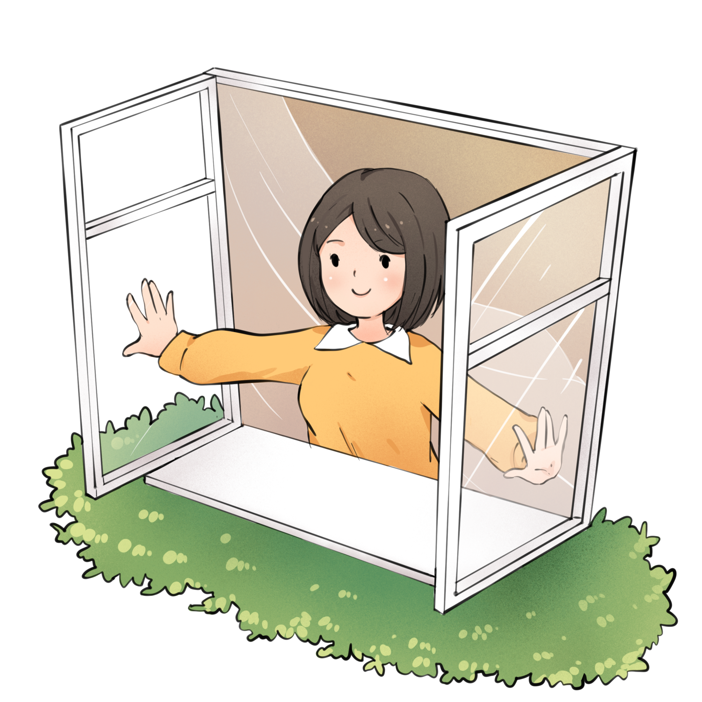
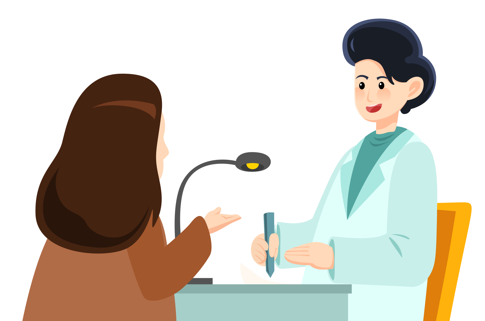
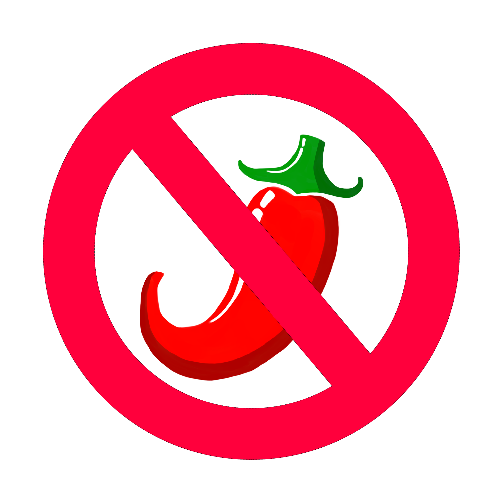
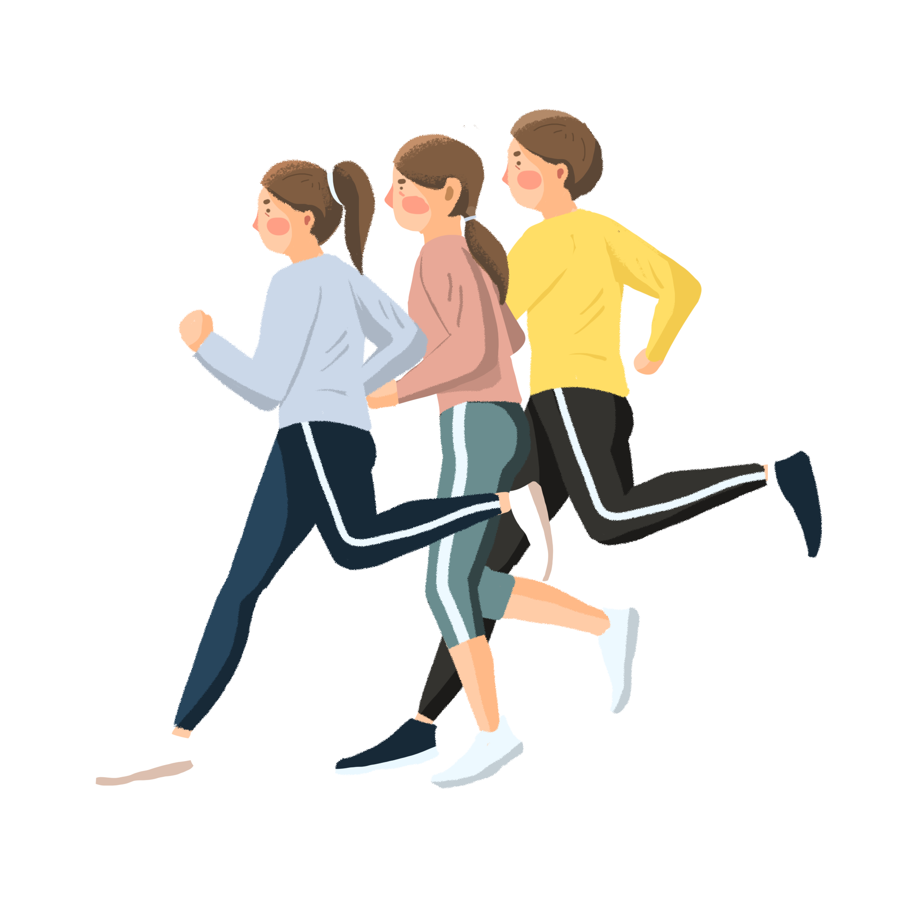

<!DOCTYPE html>
<html lang="en">
<head>
<meta charset="utf-8" />
<title>31380_202403041930</title>
<meta name="viewport" content="width=device-width, initial-scale=1, minimum-scale=1, maximum-scale=1" />
<script src="js/jquery-1.11.3.min.js"></script>
<script src="js/html2canvas.min.js"></script>
<style>
	@font-face {
		font-family: SourceHanSansCN-Heavy;
		src: url('css/font/SourceHanSansCN-Heavy.otf');
	}

	@font-face {
		font-family: SourceHanSansCN-Bold;
		src: url('css/font/SourceHanSansCN-Bold.otf');
	}

	@font-face {
		font-family: SourceHanSansCN-Regular;
		src: url('css/font/SourceHanSansCN-Regular.otf');
	}

	:root {
		--main-bdr-color: #000;
		--title-color: #b0d796;
		--title-stroke-color: #3e2308;
		--subtitle-color: #3c6421;
		--subtitle-bg-color: #fffde6;
		--text-color: #362e2b;
		--summary-color: #3c6421;
		--key-color: #eb6100;
		--key-bg-color: #000;
		--list-key-color: #3c6421;
		--list-circle-bdr-color: #000;
		--list-circle-bg-color: #f9ff58;
	}

	ul {
		padding: 0;
		margin: 0;

		li {
			padding: 0;
			margin: 0;
			list-style: none;
		}
	}

	p {
		margin: 0;
		padding: 0;
	}

	i {
		font-style: normal;
	}

	.bg {
		width: 1200px;
		height: 1600px;
		margin: auto;
		overflow: hidden;
		background: url(img/bg/bg_202403041930.jpg) center top no-repeat;
	}

	.content {
		width: 1000px;
		margin: 0px auto;
	}

	.title-wrap {
		padding-top: 65px;
		text-align: center;

		h1 {
			display: inline-block;
			position: relative;
			height: 80px;
			line-height: 80px;
			-webkit-text-stroke-width: 1.5px;
			-webkit-text-stroke-color: var(--title-stroke-color);
			text-shadow: #000 0 2px 0px;
			text-align: center;
			color: var(--title-color);
			font-size: 50px;
			font-family: SourceHanSansCN-Bold;

			&::before {
				position: absolute;
				top: 50%;
				left: -30px;
				content: '';
				/* width: 142px; */
				/* height: 222px; */
				width: 50px;
				height: 100px;
				transform: translateY(-50%);
				background: url(img/item/title_star_001.png) center center no-repeat;
				background-size: auto 100%;
			}

			&::after {
				position: absolute;
				top: 50%;
				right: -30px;
				content: '';
				/* width: 110px; */
				/* height: 213px; */
				width: 50px;
				height: 100px;
				transform: translateY(-50%);
				background: url(img/item/title_star_002.png) center center no-repeat;
				background-size: auto 100%;
			}
			
		}
	}

	.subtitle {
		display: table;
		position: relative;
		width: auto;
		height: 100px;
		line-height: 100px;
		margin: 20px 0 0;
		color: var(--subtitle-color);

		.right {
			position: relative;
			z-index: 2;
			float: left;
			color: var(--subtitle-color);
			font-size: 54px;
			font-family: SourceHanSansCN-Bold;
		}

		.line {
			position: absolute;
			left: 0;
			right: 0;
			bottom: 15px;
			z-index: 1;
			content: '';
			height: 25px;
			border-radius: 10px;
			background-color: rgba(163, 231, 117, 0.3);
		}
	}

	.text-wrap {
		position: relative;

		.text {
			padding-bottom: 0;
			/*  */
		}
	}

	.text {
		line-height: 64px;
		/* line-height: 80px; */
		padding: 0px 30px 20px;
		margin-top: 0px;
		text-align: left;
		color: var(--text-color);
		font-size: 42px;
		font-family: SourceHanSansCN-Regular;

		i {
			color: var(--key-color);
		}

		b {
			font-weight: 700;
		}
	}

	.summary {
		position: relative;
		line-height: 72px;
		padding: 30px 100px;
		/* margin-top: 80px; */
		margin-top: 50px;
		border: 4px dashed var(--summary-color);
		border-radius: 20px;
		/* text-align: left; */
		text-align: center;
		color: var(--summary-color);
		font-size: 46px;
		font-family: SourceHanSansCN-Regular;
		/* background: url(img/item/border_001.png) center top no-repeat;
		background-size: 100% 100%; */

		&::before {
			position: absolute;
			left: 50px;
			top: 80px;
			content: '';
			width: 46px;
			height: 46px;
			background: url(img/item/icon_start_001.png) center no-repeat;
			background-size: 100%;
		}

		&::after {
			position: absolute;
			right: 50px;
			bottom: 70px;
			content: '';
			width: 46px;
			height: 46px;
			background: url(img/item/icon_start_001.png) center no-repeat;
			background-size: 100%;
		}

		i {
			position: relative;
			z-index: 1;
			color: var(--list-key-color);
			font-weight: 700;

			&::after {
				position: absolute;
				left: 0;
				right: 0;
				bottom: 5px;
				content: '';
				z-index: -1;
				content: '';
				height: 25px;
				background-color: rgba(163, 231, 117, 0.3);
			}
		}

		i.first {
			&::after {
				border-radius: 8px 0 0 8px;
			}
		}

		i.last {
			&::after {
				border-radius: 0 8px 8px 0;
			}
		}
	}

	.pic-wrap {
		position: relative;
		padding-right: 300px;

		img {
			display: block;
			position: absolute;
			right: 0;
			top: 50%;
			/* margin: 50px auto; */
			/* margin: 0px auto; */
			object-fit: cover;
			transform: translateY(-50%);
		}

		.text {
			padding-bottom: 0;
			/*  */
			line-height: 75px;
		}
	}
</style>
</head>

<body>
<div class="bg" id="html-canvas">
	<div class="title-wrap">
		<h1 id="title"></h1>
	</div>
	<div class="content" id="content"></div>
</div>
</body>
<script>
var jsonText = [
	{
		title: '腋下39.5℃不淡定？听我解析如何应对！',

		page: [
			{
				content: [
					/* {
						subtitle: '一、不要慌张，先确认症状',
						subContent:
							`
								当发现腋下温度异常高，但额头并不烫时，首先要保持冷静。不要过于紧张，因为<span>单纯的腋下温度高并不一定意味着严重的病情</span>。此时，可以观察自己是否有其他不适症状，如<span>头痛、乏力、咳嗽</span>等，以便更全面地了解自己的身体状况。
								
							`,
					},
					{
						subtitle: '二、采取物理降温措施',
						subContent:
							`
								在确认症状后，可以采取一些物理降温措施来缓解不适感。比如，用<span>湿毛巾轻轻擦拭身体</span>，特别是<span>腋下、颈部等大血管经过的部位</span>，有助于散热降温。同时，保持<span>室内通风</span>，<span>避免穿着过多衣物</span>，以便让身体更好地散热。
								
							`,
					}, */

					{
						subtitle: '三、及时就医，听从医生建议',
						subContent:
							`
								虽然物理降温可以暂时缓解不适感，但高烧可能是由多种原因引起的，因此建议<span>及时就医</span>。医生会根据具体症状和检查结果，给出个性化的治疗方案。在就医过程中，要如实向医生描述自己的症状，以便医生<span>更准确地判断病情</span>。
								
							`,
					},
					{
						subtitle: '四、合理使用药物治疗',
						subContent:
							`
								在医生的建议下，可以使用一些<span>退烧药和抗生素</span>来治疗高烧。但需要注意的是，药物使用一定要<span>遵医嘱</span>，不要盲目自行购买和使用。不同药物有不同的适应症和副作用，因此要根据自己的病情和身体状况来选择合适的药物。
								
							`,
					},

					/* {
						subtitle: '五、注意休息和饮食调养',
						subContent:
							`
								在治疗过程中，充足的休息和合理的饮食也是非常重要的。要保证有<span>足够的睡眠时间，避免过度劳累</span>。同时，<span>饮食要清淡易消化</span>，多摄入富含维生素和蛋白质的食物，以增强身体免疫力。<span>避免油腻、辛辣等刺激性食物</span>，以免加重肠胃负担。
								
							`,
					},
					{
						subtitle: '六、预防为主，加强日常保健',
						subContent:
							`
								高烧往往是由身体抵抗力下降引起的，因此加强日常保健是预防高烧的关键。要保持良好的生活习惯，如定时作息、合理饮食、<span>适当运动</span>等。同时，<span>注意个人卫生和环境卫生</span>，避免感染病菌。在季节交替或流感高发期，可以<span>提前接种流感疫苗</span>等预防措施。
								
							`,
					}, */
					
				],
			},
		]
	}
];

function setHtml() {
	var html = '';

	jsonText.forEach(function (item, i) {
		var setTitle = item.title || '';
		var setObj = item.page;

		setObj.forEach(function (obj, j) {
			html = '';
			
			obj.content?.forEach(function (contentItem) {
				if (contentItem.subContent) {
					html += `
						<div class="${contentItem.picUrl ? 'pic-wrap' : 'text-wrap'}">
							${contentItem.subtitle ? `
								<div class="subtitle">
									<p class="right">${contentItem.subtitle || ''}</p>
									<i class="line"></i>
								</div>
							` : ''}
							<p class="text" style="${contentItem.subContentStyle || ''}">${contentItem.subContent}</p>
							${contentItem.picUrl ? `  ` : ''}
						</div>`;
				} 
				else if (contentItem.summary) {
					html += `<p class="summary">${contentItem.summary}</p>`
				}
			});

			var $tl = document.getElementById('title');
			var $cont = document.getElementById('content');
			$tl.innerHTML = setTitle;
			$cont.innerHTML = html;
			setKeyWords();
			/* saveImg(setTitle, j); */
		});
	}); 
}

function saveImg(setTitle = '', j = 0) {
	var realHtml = document.getElementById('html-canvas');
	var width = 1200; //获取dom 宽度

	var img_type = 'jpeg';
	// var height = realHtml.offsetHeight; //获取dom 高度
	var height = 1600; //获取dom 高度
	var canvas = document.createElement('canvas'); //创建一个canvas节点
	var scale = 1; //定义任意放大倍数 支持小数
	canvas.width = width * scale; //定义canvas 宽度 * 缩放
	canvas.height = height * scale; //定义canvas高度 *缩放
	canvas.getContext('2d').scale(scale, scale); //获取context,设置scale
	var opts = {
		tainttest: true, //检测每张图片都已经加载完成
		scale: scale, // 添加的scale 参数
		useCORS: true,
		canvas: canvas, //自定义 canvas
		logging: true, //日志开关
		width: width, //dom 原始宽度
		height: height, //dom 原始高度
		name: 'pic'
	};
	html2canvas(realHtml, opts).then(function (canvas) {
		var imgUri = canvas.toDataURL('image/' + img_type, 0.9);
		var saveLink = document.createElement('a');
		saveLink.href = imgUri;
		saveLink.download = setTitle + (j + 1) + '.' + (img_type === 'jpeg' ? 'jpg' : img_type);
		saveLink.click();
	});
}

function setKeyWords(parent = document) {
	const spans = parent.querySelectorAll('span');
	spans.forEach((span, i) => {
		const text = span.textContent;
		const characters = text.split('');
		const wrappedCharacters = characters.map((char, index, arr) => {
			if (index === 0) {
				return `<i class="first">${char}</i>`;
			}
			else if (index === arr.length - 1) {
				return `<i class="last">${char}</i>`;
			}
			else {
				return `<i>${char}</i>`;
			}
		});
		const wrappedText = wrappedCharacters.join('');
		span.outerHTML = wrappedText;
	});
}

setHtml()
</script>
</html>
